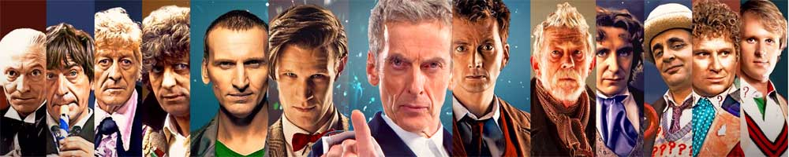
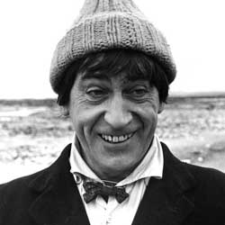

|  |
| Home | The Doctors | The Companions | The Villains | Show History |
Patrick TroughtonTroughton was born on 25 March 1920 in Mill Hill, Middlesex, England, to Alec George Troughton, a solicitor, and Dorothy Evelyn Offord, who married in 1914 in Edmonton, and had an elder brother, Alec Robert (1915–1994), and a younger sister, Mary Edith (1923–2005). Troughton attended Mill Hill School and continued to live in Mill Hill for most of his life. While at Mill Hill School, he acted in a production of J.B. Priestley's Bees on the Boat Deck in March 1937. His brother A.R. ('Robin') Troughton shared the 1933 Walter Knox Prize for Chemistry with the future Nobel Prize winner Francis Crick, who also attended Mill Hill School. Troughton later attended the Embassy School of Acting at Swiss Cottage, studying under Eileen Thorndike. After his time at the Embassy School of Acting, Troughton won a scholarship to the Leighton Rallius Studios at the John Drew Memorial Theatre on Long Island in New York, US. In 1939 Troughton joined the Tonbridge Repertory Company. When the Second World War began, he returned home on a Belgian ship which struck a sea mine and sank off the coast of Great Britain, having had escaped in a lifeboat. In 1940, he joined the Royal Navy and was commissioned as a Lieutenant with the R.N.V.R., being first employed on East Coast Convoy duty from February to August 1941, and then with Coastal Forces' Motor Gun Boats based at Great Yarmouth from November 1942 to 1945. During his service with the M.G.B.'s, he was on one occasion involved in an action against Kriegsmarine E-boats which resulted in one of the enemy craft being destroyed by ramming, whilst Troughton's boat and another destroyed two more with their gunfire. His decorations included the 1939-45 Star, and Atlantic Star, and he was Mentioned in Dispatches. He used to wear a tea cosy on his head in cold weather in the North Sea. After the war, Troughton returned to the theatre in 1945. He worked with the Amersham Repertory Company, the Bristol Old Vic Company and the Pilgrim Players at the Mercury Theatre, Notting Hill Gate. He made his television debut in 1947. In 1948, Troughton made his cinema debut with small roles in Olivier's Hamlet, the Joseph L. Mankiewicz directed Escape (one of the stars of which was William Hartnell), and a minor role as a pirate in Treasure Island (1950) appearing only during the attack on the heroes' hut. Television though, was his favourite medium. In 1953 he became the first actor to play the folk hero Robin Hood on television, starring in six half-hour episodes broadcast from 17 March to 21 April on the BBC, and titled simply Robin Hood. His grandson Sam Troughton played one of Robin's colleagues in the 2006 BBC TV series of the same name, and Patrick himself would make an appearance in The Adventures of Robin Hoodstarring Richard Greene. He appeared as the murderer Tyrrell in Olivier's film of Richard III (1955). He was also Olivier's understudy on the film and appears in many long shots as Richard. Troughton's other notable film and television roles included Kettle in Chance of a Lifetime (1950), Sir Andrew Ffoulkes in The Scarlet Pimpernel (1955), Vickers in the episode entittled Strange Partners in The Invisible Man (1958, the series also featured one of his futureDoctor Who co-stars, Deborah Watling, as Sally), Phineus in Jason and the Argonauts (1963), Quilp in The Old Curiosity Shop (1962), Paul of Tarsus (BBC 1960, title role), Dr. Finlay's Casebook (BBC 1962, semi-regular). He voiced Winston Smith in a 1965 BBC Home Service radio adaptation of Nineteen Eighty-Four. Prior to Doctor Who he appeared in numerous TV shows including, The Count of Monte Cristo, Ivanhoe, Dial 999, Danger Man, Maigret, Compact, The Third Man, Crane, Detective, Sherlock Holmes, No Hiding Place, The Saint, Armchair Theatre, The Wednesday Play, Z-Cars, Adam Adamant Lives! and Softly, Softly. Troughton was offered the part of Johnny Ringo in the Doctor Who story The Gunfighters but turned it down. In 1966, Doctor Who producer Innes Lloyd looked for a replacement for William Hartnell in the series' lead role. The continued survival of the show depended on audiences accepting another actor in the role, despite the bold decision that the replacement would not be a Hartnell lookalike or soundalike. Lloyd later stated that Hartnell had approved of the choice, saying, "There's only one man in England who can take over, and that's Patrick Troughton". Lloyd chose Troughton because of his extensive and versatile experience as acharacter actor. After he was cast, Troughton considered various ways to approach the role, to differentiate his portrayal from Hartnell's amiable-yet-tetchy patriarch. Troughton's early thoughts about how he might play the Doctor included a "tough sea captain", and a piratical figure in blackface and turban. Doctor Who creator Sydney Newman suggested that the Doctor could be a "cosmic hobo" in the mould of Charlie Chaplin, and this was the interpretation eventually chosen. Troughton was the first Doctor to have his face appear in the opening titles of the show. In one serial, The Enemy of the World, Troughton played two parts as both the protagonist (The Doctor) and the antagonist (Salamander). During his time on the series, Troughton tended to shun publicity and rarely gave interviews. He told one interviewer, "I think acting is magic. If I tell you all about myself it will spoil it". Years later, he told another interviewer that his greatest concern was that too much publicity would limit his opportunities as a character actor after he left the role. A rare interview with Ernest Thompson from Radio Times reveals that Troughton "always liked dressing up, and would have been happy as a school teacher as children keep one young". Troughton gave away the secret of what Jamie (Frazer Hines) wore underneath his kilt – "khaki shorts". Troughton was popular with both the production team and his co-stars. Producer Lloyd credited Troughton with a "leading actor's temperament. He was a father figure to the whole company and hence could embrace it and sweep it along with him". Troughton also gained a reputation on set as a practical joker. Many of the early episodes in which Troughton appeared were among those discarded by the BBC (a full list of Doctor Who episodes missing from the BBC Archives is available here). Troughton found Doctor Who's schedule (at the time, 40 to 44 episodes per year) gruelling, and decided to leave the series in 1969, after three years in the role. This decision was also motivated in part by fear of being typecast. Troughton's decision would eventually become something of an unwritten law (the "Troughton Rule") among actors, to prevent one from becoming typecast in a particular role in a potentially long-running television programme. Troughton returned to Doctor Who three times after formally leaving the programme, returning to the character more than any other actor who portrayed the Doctor after ending his regular connection with the series. The first of these occasions was in The Three Doctors, a 1973 serial celebrating the programme's 10th anniversary. Ten years later, Troughton overcame some reluctance to reprise his role and agreed to appear in the 20th anniversary special The Five Doctors at the request of series producer John Nathan-Turner. He also agreed to attend Doctor Who conventions including the show's 20th anniversary celebrations at Longleat in 1983. He also appeared around the world with Nathan-Turner. Troughton enjoyed the return to the programme so much that he readily agreed to appear one more time as the Second Doctor, with Colin Baker's Sixth Doctor in The Two Doctors (1985). Reportedly, he also advised the Fifth Doctor, actor Peter Davison, to limit his time in the role to three seasons to avoid typecasting and the younger actor followed this advice. In 2013, the BBC commissioned a docudrama about the early days of Doctor Who, as part of the programme's fiftieth anniversary celebrations. Troughton appears as a character in the production, called An Adventure in Space and Time, portrayed by actor Reece Shearsmith. After Troughton left Doctor Who in 1969, he appeared in various films and television roles. Film roles included Klove in Scars of Dracula (1970), a bodysnatcher in Frankenstein and the Monster from Hell (1973), Father Brennan in The Omen (1976) and Melanthius in Sinbad and the Eye of the Tiger (1977). Television roles included the recurring role of Thomas Howard, 3rd Duke of Norfolk in five of the six episodes of The Six Wives of Henry VIII (1970) (for which he commenced rehearsals just one week after completing his final studio recording on Doctor Who), the villainous Nasca in Thames Television's Aztec-themed drama The Feathered Serpent (1976–78), a guest starring spot in the comedy series The Goodies in the episode "The Baddies", as well as episodes of Paul Temple, Dr. Finlay's Casebook,Doomwatch, The Persuaders!, A Family at War, Coronation Street, Softly, Softly: Taskforce, Colditz, Play for Today, Z-Cars, Special Branch, Sutherland's Law, The Sweeney, Jason King, Survivors, Crown Court, Angels, Warship, Van der Valk, Space: 1999, The Onedin Line, All Creatures Great and Small, Only When I Laugh (Series 2 Episode #9), Nanny and Minder (in a March 1984 episode entitled Windows, Season 4 Episode 9). He also portrayed Cole Hawlings in a BBC Television dramatisation of the John Masefield children's bookThe Box of Delights (1984). In the same year he also appeared in a "Two Ronnies" Christmas Special playing a judge. Troughton's health was never entirely robust and later in his life he refused to accept his doctor's advice that he had developed a serious heart condition through overwork and stress. He suffered two major heart attacks, one in 1979 and the other in 1984, both of which prevented him from working for several months afterwards. Following each of these attacks, his doctor's warnings were again ignored as Troughton committed himself to a heavy TV and film schedule. He featured in the 1974 11-part radio adaptation of Evelyn Waugh's Sword of Honour. In 1986, he was a regular in the first series of the LWT sitcom The Two of Us, and guested in an episode of Super Gran in May 1987, which was the last role he filmed. His final television appearance was in the autumn of the same year in Knights of God, which had actually been filmed two years earlier. Troughton also appeared in the first episode of Central Independent Television's Inspector Morse, entitled "The Dead of Jericho", which was originally transmitted on ITV on 6 January 1987. On 27 March 1987, two days after his 67th birthday, Troughton was a guest at the Magnum Opus Con II science fiction convention in Columbus, Georgia, USA. Although he had been warned by his doctors before leaving the UK not to exert himself because of his heart condition, Troughton appeared to be in good spirits and participated vigorously in the day's panels, and was looking forward to a belated birthday celebration, which was planned for the Saturday evening, as well as a screening of the Doctor Who story The Dominators, which Troughton had requested personally, on the Saturday afternoon. Troughton suffered a third and final heart attack at 7:25 AM the next day just after he had ordered his breakfast from the hotel staff. According to the paramedics who were called, Troughton died instantly. |
Brendan Davey Monica DuCong'e Erik Eyler Kayleen Garcia Katie Hyche Ryan Moeller |
Christine O'Brien Alex Recinos Julia Schwartz Madeleine Schwartz Ann Marie Skjold Ashly Wilkins |
[Reference Links] |